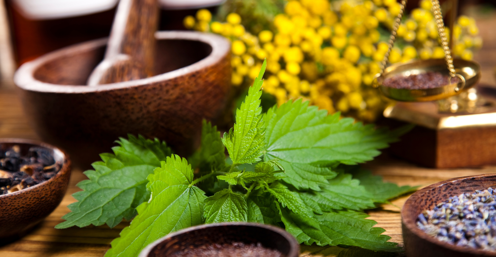

Os recursos naturais vegetais são essenciais para a manutenção da vida no planeta, desempenhando um papel crucial em diversos aspectos do meio ambiente e da vida humana. Eles incluem uma vasta gama de plantas e árvores, que são fontes de alimentos, remédios, materiais, oxigênio e muitos outros produtos fundamentais para o bem-estar dos seres vivos. As plantas, por meio da fotossíntese, são responsáveis por liberar oxigênio na atmosfera e absorver dióxido de carbono, contribuindo para a regulação do clima e a qualidade do ar.

Na alimentação humana, os recursos vegetais são fundamentais. Frutas, legumes, grãos, sementes e vegetais formam a base de dietas saudáveis e equilibradas, fornecendo nutrientes essenciais como vitaminas, fibras, proteínas e carboidratos. Além disso, muitas plantas são utilizadas na medicina tradicional e moderna para a produção de medicamentos e tratamentos. O uso de plantas como fonte de remédios naturais é uma prática que remonta aos tempos antigos e continua sendo uma alternativa importante para muitas pessoas.
As plantas também fornecem matéria-prima para a indústria, como madeira, fibras e resinas. A madeira, extraída de árvores, é amplamente utilizada na construção civil, na fabricação de móveis, papel e outros produtos. As fibras vegetais, como o algodão, o linho e o sisal, são fundamentais para a produção de roupas e tecidos. Outros recursos vegetais, como as folhas e flores, são utilizados em cosméticos, perfumes e até na produção de alimentos processados.
 Além de seus benefícios diretos para os seres humanos, os recursos vegetais desempenham papéis ecológicos vitais. As florestas, por exemplo, são habitats de milhares de espécies de animais e plantas, além de regularem o ciclo da água e protegerem o solo contra a erosão. As plantas também são essenciais para a preservação da biodiversidade, fornecendo alimentos e abrigo para muitas espécies.
Além de seus benefícios diretos para os seres humanos, os recursos vegetais desempenham papéis ecológicos vitais. As florestas, por exemplo, são habitats de milhares de espécies de animais e plantas, além de regularem o ciclo da água e protegerem o solo contra a erosão. As plantas também são essenciais para a preservação da biodiversidade, fornecendo alimentos e abrigo para muitas espécies.
No entanto, o uso inadequado e excessivo dos recursos vegetais, como o desmatamento, a monocultura e o uso de pesticidas, pode comprometer a sustentabilidade desses recursos e os ecossistemas naturais. O desmatamento, em particular, tem levado à perda de biodiversidade e ao agravamento das mudanças climáticas, já que as florestas desempenham um papel crucial no sequestro de carbono.
 A preservação e o manejo sustentável dos recursos vegetais são fundamentais para garantir que as gerações futuras possam continuar a contar com esses recursos essenciais. A agricultura sustentável, o reflorestamento e a conscientização ambiental são passos importantes para proteger as plantas e garantir que sua exploração seja feita de forma responsável e equilibrada.
A preservação e o manejo sustentável dos recursos vegetais são fundamentais para garantir que as gerações futuras possam continuar a contar com esses recursos essenciais. A agricultura sustentável, o reflorestamento e a conscientização ambiental são passos importantes para proteger as plantas e garantir que sua exploração seja feita de forma responsável e equilibrada.